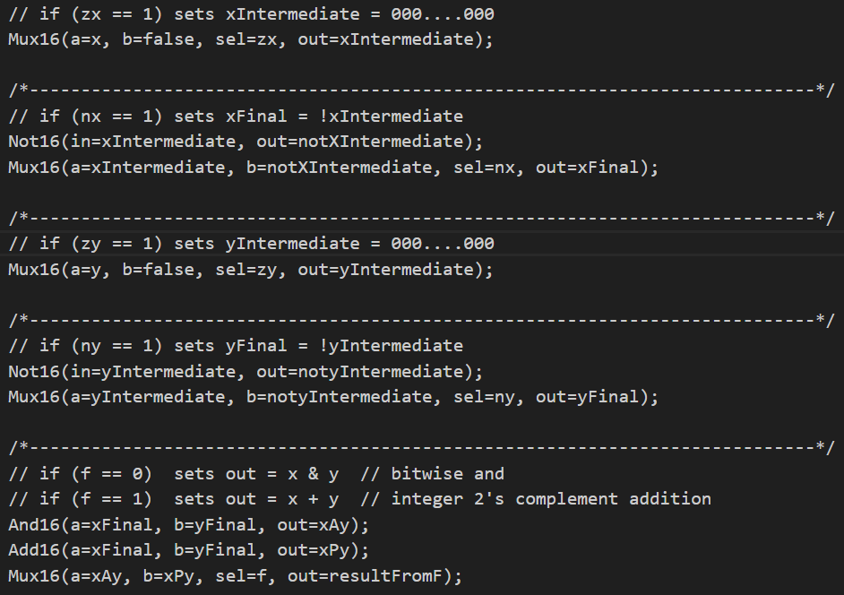
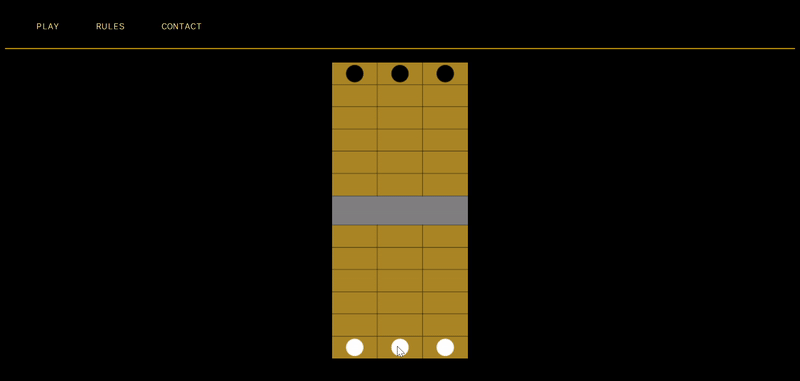

About Me
I currently repair film lighting equipment at a Grip & Electric rental house. I'm most
experienced with repairs on LED lights by brands like
Aputure,
Astera,
ARRI,
and
LiteGear. I have more limited experience with LED lights by Nanlux, Creamsource,
Rosco, and ARRI HMIs.
Before this, I studied computer science with a specialization in Theory
at UChicago. I graduated in 2023 and have been working in the film industry
ever since.
In my free time, I enjoy learning about digital logic circuit design, electronics,
and low-level computer architecture. More on that in the following section!
You can take a look at my resume here if you'd like.
Fun Projects
Controlling the MAX7219 without a Microcontroller (hobby project)

4-bit counter using JK flip flops (hobby project)

Constructing a computer with HDL - solutions to all exercises from Elements of Computing Systems by Schocken and Nisan (hobby project)

Study companion PCB (school project)

River Game (hobby project)
